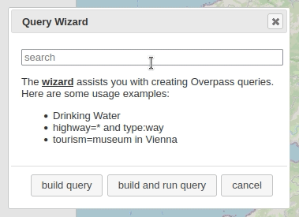
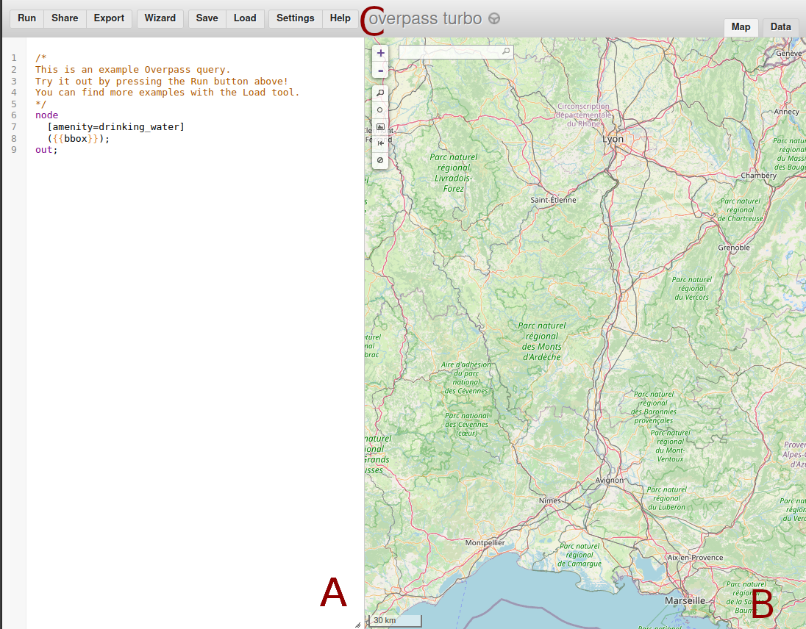
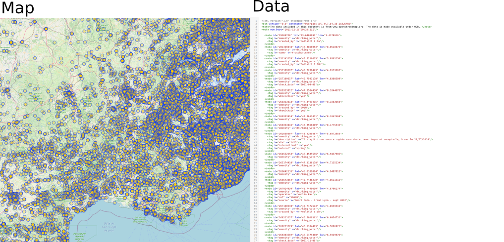
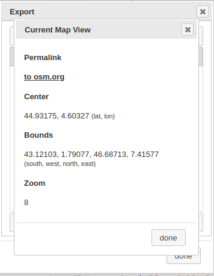

I use Overpass Turbo a lot and every time, I rediscover new amazing stuff to do with it. This is one of the many gems in the OpenStreetMap ecosystem! In this post, I will assume a basic understanding of OpenStreetMap (OSM) data structure, but if you want a quick quality refresher, I really like the one in Overpass API’s User Manual.
What is Overpass Turbo?
Overpass Turbo is a frontend for Overpass API. The author is Martin Raifer, the code and the list of contributors can be browsed on the project’s GitHub. You can find the attributions for the entire stack at the bottom of this post.
Overpass API merits several posts. Here, I will mostly focus on Overpass Turbo (but maybe you will learn some nice stuff with Overpass API!). It’s main contributor/author is Roland Olbricht and the code can be found here.
If you want to use OSM data you you can follow two main paths (I don’t like using the OSM editing API to retrieve data). The first one uses .pbf files1. You can check osmextract if you are interested in that option and want use R. GEOFABRIK is providing PBF files for different parts of the world at various scales. You will also probably either need Osmosis and/or osm2pgsql. The second method for data retrieval uses Overpass.
Overpass API will store all the data behind the map and a diff file with last minute changes that happened subsequently can be added. This API is read only: you will not be able to write into OSM with it. For that you should use other kinds of tools, like JOSM or OSM API (and the old OSM XAPI).
Overpass Turbo is the perfect place to prototype your queries and explore OSM data.
A Tour of Overpass Turbo:
I will first repeat some basic informations from OSM’s Wiki.
You can divide the overpass turbo interface in 3 parts.

In A we have the Editor panel. In this picture, I used one from the tool examples. As I already said, I will not dive too deeply in Overpass Query Language (Overpass QL), but I’ll explain this one:
/*
Use this to comment on multi lines
*/
node // Part 1: here we want nodes matching
[amenity=drinking_water] // amenity=drinking_water
({{bbox}}); // inside the bbox displayed in B
// ";" -> end of statement
out; // Part 2: we take part 1 and display it B is the display panel. The result of your query can be displayed in the “Map” or directly in “Data” (top right corner). Here we are in XML because out wasn’t specified. To specify another output format, you need to add a setting ([out:json]) before node see Settings in Overpass QL wiki.

Lastly we can find various menus (C) on the top:
Runexecutes the queryShareprovides you a link with your query, the bbox used, and can execute itExportgives you various ways to export the data, the map and the query (I will show you some nice tips later)Wizardhelps you to build your first query. See its wiki for more detailsSave/Loadenables you to save and load your own queries (Loadalso contains very nice examples! Check out the one by MapCSS!)Settingcan help you fine tune Overpass turbo and export your settingsHelpprovides you with plenty of good links and the attributions (I used it)
Getting data!
Now that you are more familiar with Overpass turbo let’s use the Wizard to help us make our request. I typed river then pressed build query:
The wizard has built a first query. After a quick check, this query looks fine. I will just increase the time-out a bit from 25 to 360 (it is in seconds). I can do that because this query will be run in a local instance of Overpass API (on my computer), not on the public server. I will explain the limitations of public servers a bit later.
This is the query:
/*
This has been generated by the overpass-turbo wizard.
The original search was:
“river”
*/
[out:json][timeout:360];
// gather results
(
// query part for: “river”
way["natural"="water"]["water"="river"]({{bbox}});
relation["natural"="water"]["water"="river"]({{bbox}});
);
// print results
out body;
>;
out skel qt; As a result, I get 15323 nodes making 112 ways, 10 relations and 72 polygons. You can see that on the bottom right part of the Map panel. You can easily explore the data while moving around the map. If you are happy with the result, you can export it in a GeoJSON via the Export menu, then by selecting Data and here picking GeoJSON. Overpass Turbo offers two options: either download it or copy it to clipboard.
Most of time you will need to improve the query to match your needs. For that, OSM wiki contains a lot of useful information. I checked the river entry in it and discovered that the key waterways can be interesting to explore.
Saving our Bounding Box (bbox)
You may have noticed that we used the screen display to set up our bounding box(bbox). This is nice but if we want to reproduce our workflow or keep the same bounding box with other tools/data, we need to record it. You have various ways to save it.
The first one is to go in the Export menu, then go to the Map tab and select Current Map view. The bbox is in “Bounds” (with other useful information).

The second option is to get the bbox from the xml or from the QL. You can get them from the same Export menu in the Query then you can pick convert to Overpass-XML or pick OverpassQL (compact or not). If you have downloaded Overpass API you can find this convert script in cgi-bin/ directory of the program. Converting to a compact Overpass Query Language is very useful when you need to send multiple requests on an overpass api instance.
I have made two quick R functions to retrieve this informations:
# from xml
bbox_from_xml <-function(file_xml) {
all_xml = xml2::read_xml(file_xml)
bbox_query = xml2::xml_find_first(all_xml, ".//bbox-query")
bbox_string = xml2::xml_attrs(bbox_query)
as.numeric(c(bbox_string["w"], bbox_string["s"], bbox_string["e"], bbox_string["n"]))
}
# from overpass AL
bbox_from_QL <- function(file_ql) {
raw_ql = readLines(file_ql)
# the ugly regex to get the start of bbox
# I keep ) so I will need to remove it
locate_bbox = regexpr(pattern = "[0-9].+?(?=\\))",
raw_ql, perl = TRUE)
bbox_string = substring(raw_ql,
locate_bbox[1],
locate_bbox[1] + attr(locate_bbox, "match.length") - 1 )
as.numeric(unlist(strsplit(bbox_string, split = ","))) # round a bit
}OSM bounding box follows the “min Longitude, min Latitude, max Longitude, max Latitude” but that’s not the case of the overpass API which follows “South, West, North East” (ie: min Latitude, min Longitude, max Latitude, max Longitude). You start with south then go clockwise.
You can use osmdata::bbox_to_string to convert it to a string. I also highly recommend that you use the osmdata2 package alongside Overpass Turbo, both work very well together.
When you have a specific bbox, you can also use it in Overpass QL settings3.
Using instances other than the default
Overpass Turbo is the frontend of an instance of the Overpass API hosted somewhere. You have a list here of all the public instances available. You can find them in the settings menu, then General Settings in the server pull-down menu.
Those instances are provided by the community and to avoid someone taking over all the shared resources, some rules need to be respected. This is why you have a time-out set when you start a query. If, like me, you want to experiment or use a good amount of server resources, you should set up your own instance (or at least start with querying a small amount of data/a less complex request) .
When doing that, you can provide your private address to Overpass Turbo. I use a pretty standard installation of the instance on my computer so mine is http://localhost:80/api/ (yup localhost on port 80 behind an apache web server).
Bonus: if you use osmdata, you can use your own OSM instance with set_overpass_url()
I hope you discovered some useful stuff! If I miss something or if you want to correct/add things, feel free to reach out!
Full attributions
Data Sources
Data © OpenStreetMap contributors, ODbL (Terms)
Data mining by Overpass API
Map tiles © OpenStreetMap contributors, CC-BY-SA
Search provided by Nominatim
Software & Libraries
Map powered by Leaflet
Editor powered by CodeMirror
Other libraries: osmtogeojson, togpx, tokml, lodash, jQuery, jQuery UI, html2canvas, canvg, leaflet-locationfilter, leaflet.PolylineOffset, maki, SJJB map icons, Osmic, FileSaver.js, MapBBCode, Moment.js, polylabel, osm-auth
Footnotes
Mark Padgham, Bob Rudis, Robin Lovelace, Maëlle Salmon (2017). osmdata Journal of Open Source Software, 2(14). URL https://doi.org/10.21105/joss.00305↩︎